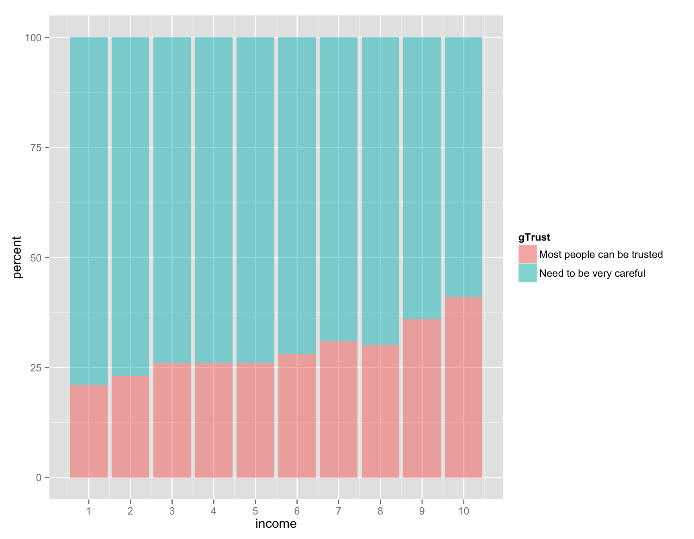
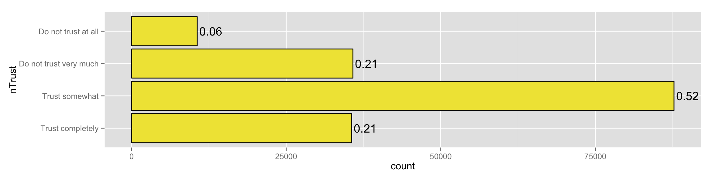
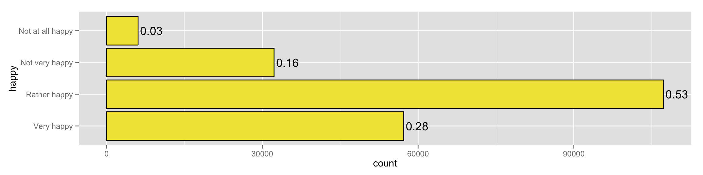
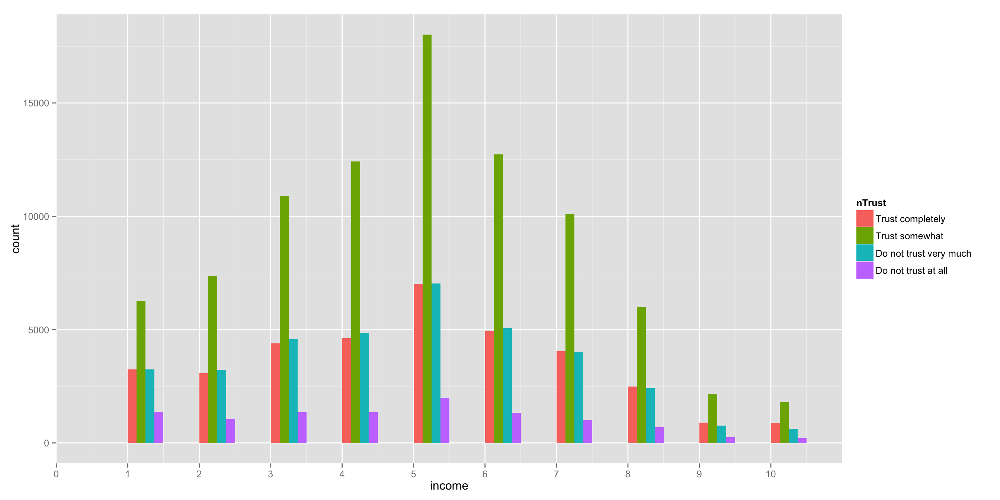

overall distribution is as follows:


less and less trust relatively when changing income definition:
back to table of contents

community trust does not vary across 
Show general trust and community trust across 5 factors….
•